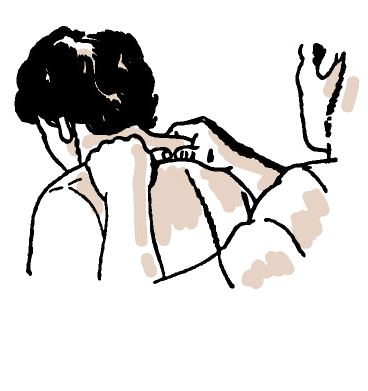
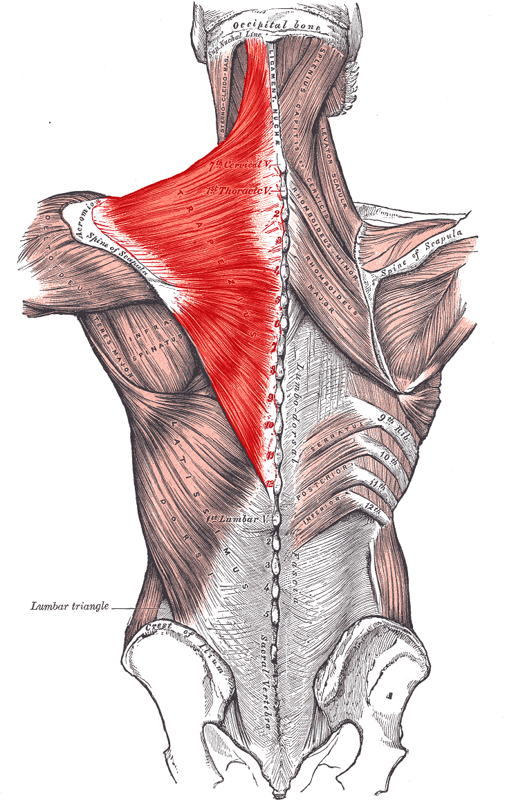
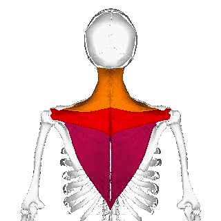
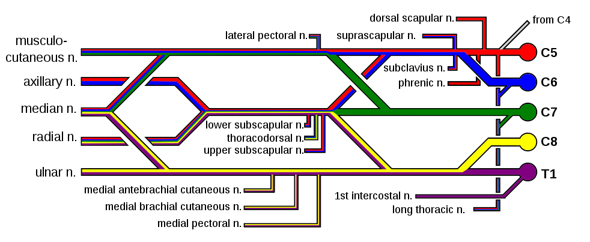
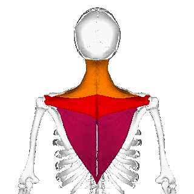
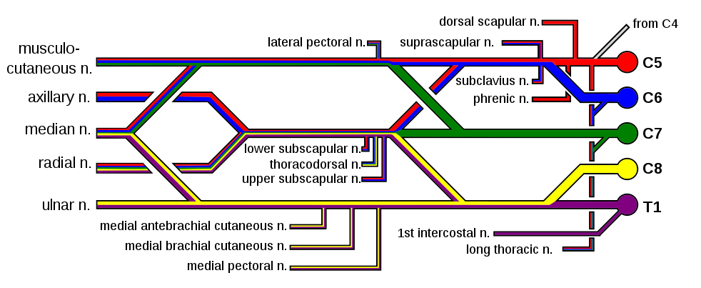

Masarea mușchilor trapezi (10-1) și a regiunii cervicale
posterioare și postero-laterale (3-5-3):
Descriere:
Se efectuează în porţiunea din dreptul vertebrelor T-1; T-2; bilateral, într-un punct, minim de
zece ori, cu policele. Se presează perpendicular pe punct efectuând apoi o mişcare de împingere
înspre cap şi apoi spre umeri. Amplitudinea mişcării este dată de limita elasticităţii ţesutului.
Procedeul se execută lent, profund, ritmic, păstrând constantă intensitatea apăsării pe tot
parcursul împingerii ţesuturilor.
MASAREA REGIUNII CERVICALE POSTERIOARE ŞI POSTERO-LATERALE, stânga şi dreapta.
Se masează prin presare fermă a muşchilor cu policele şi tragere înspre vertebre (apofizele
spinoase). Mişcarea se execută în limita elasticităţii ţesutului, pe 3 linii, în câte 5 puncte, începând
din imediata vecinătate a spinelor vertebrale cervicale (prima linie). Se repetă de câte 3 ori pe fiecare
linie.Primul punct al fiecărei linii se află imediat sub osul occipital, ultimul fiind, cu aproximaţie, în
dreptul vertebrei C-7.Palma practicantului sprijină fruntea pacientului, astfel încât capul acestuia să fie complet relaxat.

 
